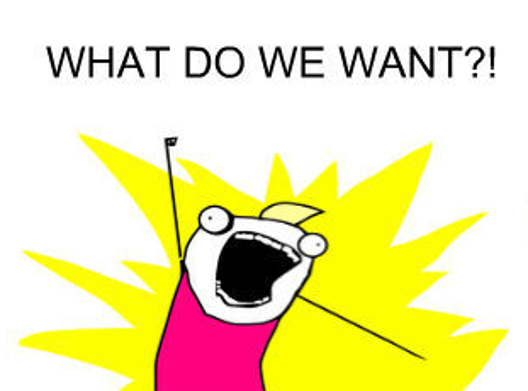

Event-driven microservices
making sure each messages is processed exactly once
Domain-Driven Design
Event Sourcing
Message delivery & processing


Sync request-response
Async fire-and-forget
Async reliable
github.com/exactly-once/workshop/tree/master/Short
Exercise 1
Processing a message
Add a message handler class
Load an order from the order repository
Add new item to the order
Publish an event
Persist changes in the order repository
Exercise 2
Simulate duplicates
Extend the Client sending pipeline with via a Behavior
Duplicate the send by invoking the pipeline twice
Test the behavior of the message handler 🤞
"Just make your logic idempotemt"
-- Twitter Trolls
Treat order as a set of items
Check for duplicates based on contents of the order
Duplicate if already contains a given type of item
Exercise 3
Simulate database problems
Prevent storing an order that has item of type SwissCheese
Test the behavior of the message handler 🤞
Reverse the order of publish and store operations
Test the behavior of the message handler 🤞
Exercise 4
Simulate message broker problems
Extend the Orders sending pipeline with via a Behavior
If a message being sent contains QuarkAndPotatoes throw exception
Test the behavior of the message handler 🤞

Framing the problem
Don’t lose messages 🗑️
Apply state change only once 👯♂️
Don't leak non-durable state 👻
Exercise 6
Simulate message re-ordering
Make sending messages fire-and-forget in the Client
Duplicate AddItem messages of type Mushrooms with a 10 seconds delay
Test the behavior of the message handler 🤞
"... we want an endpoint to produce observable side-effects equivalent to some execution in which each logical message gets processed exactly-once"
-- Tomasz Masternak
Consistent messaging
Exercise 7
ID-based de-duplication
Add collection of processed message IDs to the order
Check if that collection contains the current message ID when de-duplicating
Add current message ID to the collection before persisting changes
Leave publishing as-is
Check the behavior of the Billing service. What happened? 🤔
Exercise 8
Deterministic message ID
Use the Utils class to generate deterministic message ID when publishing
Test the behavior of Billing service 🤞
Exercise 9
Mysterious case of a missing message
A new event is published when the first item is added to an order
Sometimes when two items are added quickly, the new event is not published
The missing event can be correlated to message broker issues 🤔
Business logic is executed correctly ✔️
Message publishing is based on an incorrect state ❌
Consistent messaging
Durably store outgoing messages
Re-publish messages based on historic state
Exercise 10
Store outgoing messages as part of the entity
Dispatch messages asynchronously
Thank you!
github.com/exactly-once/outbox-based-consistent-messaging